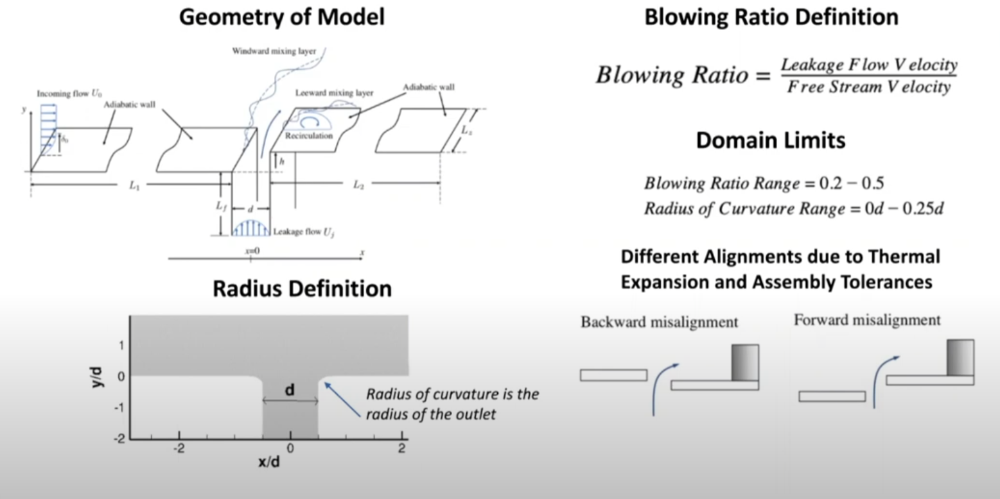
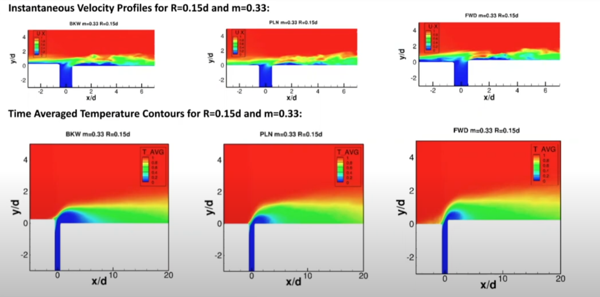
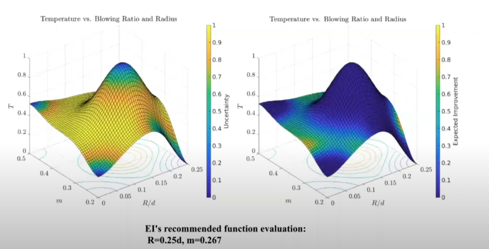

Gas turbine engines operate under extreme thermal and mechanical stress, making internal cooling a critical challenge. One persistent issue occurs at the interplatform gap formed during the assembly of the turbine annulus and compressor. This gap, if left unmanaged, allows hot combustion gases to leak into sensitive engine components. To counter this, engineers introduce a slot jet of air as a protective barrier. However, determining the optimal geometry and flow characteristics of this cooling jet remains an open problem in turbine design.
Our project addresses this challenge by applying Bayesian optimization to identify the best configuration for the slot jet used to cool this interplatform gap. Specifically, we optimize two key design parameters: the radius of curvature at the outlet and the slot jet's flow rate. To evaluate performance, we use Large Eddy Simulations (LES), a high-fidelity computational fluid dynamics approach capable of capturing turbulent flow features with accuracy.
The design process leverages Bayesian optimization, a probabilistic method particularly suited for expensive, black-box functions such as fluid simulations. By iteratively sampling promising configurations, we efficiently search the design space while minimizing the number of required simulations.
 I was responsible for setting up and running the LES simulations, preprocessing the simulation data, and integrating the results with the optimization framework. This required careful mesh setup, parameter tuning, and post-processing to extract meaningful performance metrics for use in the Bayesian optimization loop.
Our methodology integrates engineering insight, simulation-driven evaluation, and data-efficient optimization. The result is a workflow that accelerates the design of high-performance cooling systems for gas turbines. The final optimized design showed significant improvement in preventing backflow of combustion gases, reducing thermal stress on critical components.
